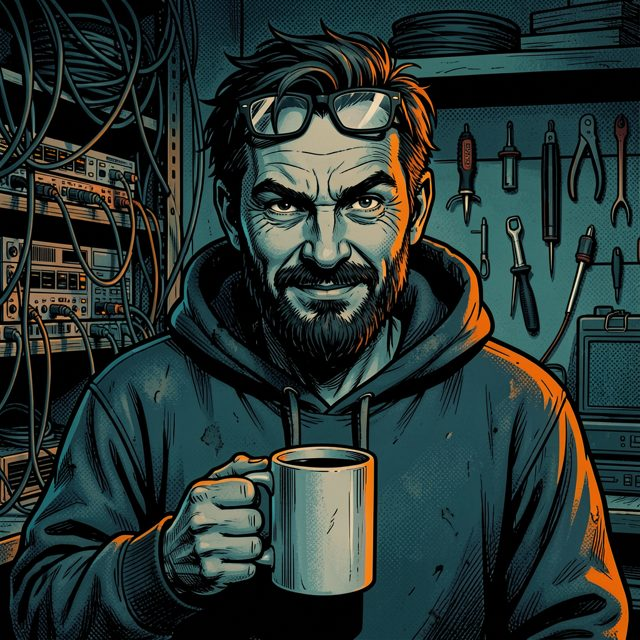

OSI-Agenten · Kurzanleitung
Einheit 7 · Operation Lohnzettel · „Lest das. Dann muss ich nichts zweimal erklären.“ – Kalle
Starten
- ZIP-Datei entpacken (Rechtsklick → „Alle extrahieren“). Nicht direkt aus dem ZIP heraus öffnen!
- Im entpackten Ordner
spiel doppelt auf index.html klicken. Das Spiel öffnet sich im Browser – Internet braucht ihr nicht.
- Beim ersten Mal: Codename wählen, euer Kürzel eintragen (so, dass eure Lehrkraft euch erkennt) und eine Figur aussuchen. Spielt ihr zu zweit an einem Gerät, tragt beide Kürzel ein – das Spiel nennt euch dann ein „Duo“.
- Auf der Karte klettert eure Figur Schritt für Schritt nach oben – von der Grundausbildung über L1 bis L7. Knoten anklicken → Start. Das Spiel speichert nach jeder Aufgabe automatisch in eurem Browser.
⚠ Die wichtigste Regel: Das automatische Speichern im Browser ist nur ein Komfort. Eure echte Sicherung ist die Export-Datei (.osiagent). Ohne sie ist euer Fortschritt weg, sobald jemand den Browser-Verlauf löscht, ihr einen anderen Browser oder Rechner nehmt.
Am Ende jeder Stunde
- Oben auf 💾 Sichern / Laden → Spielstand exportieren.
- Die Datei (im Download-Ordner) bei eurer Lehrkraft abgeben. Zu zweit: auch an die andere Person schicken.
Weiterspielen
- Gleicher Rechner, gleicher Browser: index.html öffnen → Weiterspielen.
- Anderer Rechner oder Browser: Spielstand-Datei laden und die neueste
.osiagent-Datei auswählen.
Neue Version bekommen?
Die neue ZIP-Datei in denselben Ordner entpacken und die alten Dateien überschreiben. Euer Fortschritt bleibt erhalten. Falls das Spiel euch nicht wiedererkennt: einfach eure letzte .osiagent-Datei laden – alles ist wieder da.
Gut zu wissen
- Tipps von Kalle kosten ein paar Punkte – aber lieber einen Tipp nehmen als zehnmal raten. Falsche Antworten kosten auch Punkte, ihr kommt aber immer weiter.
- Jeden schon erreichten Knoten auf der Karte (oder über 📑 Inhalt oben) könnt ihr wieder öffnen, das 📘 Handbuch zeigt alle Schichten auf einen Blick. Eure Figur ändert ihr mit einem Klick auf die Figur oben links.
- Aufgaben mit ★ sind Bonus-Akten – freiwillig, aber gut für Punkte.
- Nach dem Finale wartet das Abschlussverhör: Jede Person beantwortet allein zwölf Fragen – ohne Punkte und ohne Tipps. Es ist keine Note, sondern zeigt euch und eurer Lehrkraft, wo ihr noch Lücken habt. Danach den Spielstand exportieren und abgeben.
- Sound gibt es auch (🔇 oben rechts) – dann aber bitte mit Kopfhörern. Mit 🌙/☀️ schaltet ihr zwischen hell und dunkel um.
- Etwas funktioniert nicht? Erst Seite neu laden (F5), dann eure Lehrkraft fragen.
Läuft in aktuellen Browsern (Edge, Chrome, Firefox, Brave, Vivaldi …). Der Speicher im Browser ist nur vorläufig – je nach Browser und Einstellung wird er gelöscht. Darum gilt immer: am Stundenende exportieren.
Tablet: Dort lässt sich die ZIP meist nicht starten. Spielt dann online unter glaside.github.io/osi-agenten/spiel/.